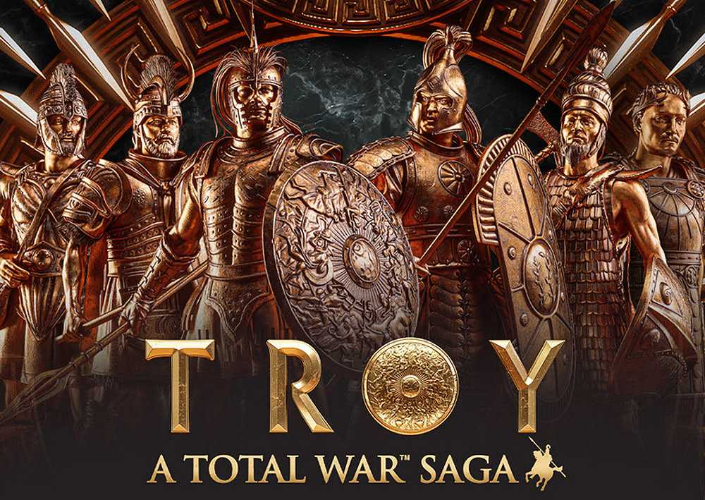

Отлично демонстрирует Бронзовый век, как с экономической, так и с военно-исторической и литературно-повествовательной точки зрения.
Отличный компромисс для аудиторий, которые любят художественный (мифологический) тип игры, исторически-достоверный или что-то среднее.
Через особые способности и индивидуальную сюжетную линию игрок может узнать характер каждого героя — лидера фракции, описанный прежде в произведениях Гомера и Вергилия. Например, Эней, как писал Вергилий в «Энеиде», умеет разговаривать с умершими для получения важной информации.

Год выпуска: 2020
Разработчик: Creative Assembly
Достоверность: 7/10
Разработчик: Creative Assembly
Достоверность: 7/10